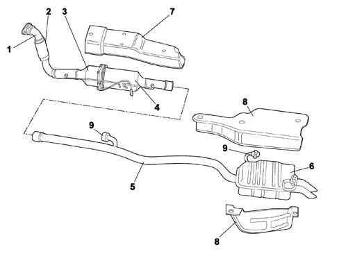

DESCRIPTION
- Path
- Descriptions > 10 ENGINE > 1076 EXHAUST PIPES AND SILENCERS > DESCRIPTION
- Kind
- system description
- Applies to
- engines: 2.0 16V JTD, 2.2 16V JTD; all production periods
- Interactive page
- https://sloeber94.github.io/elrnDB-fUlss/en/#/179006615
Applies to: engines: 2.0 16V JTD, 2.2 16V JTD; all production periods
The exhaust pipe is divded into two sections:
- front section;
- rear section.
The front section of the exhaust pipe (1) includes a flexible section (2) fitted to limit the transmission of engine vibrations, the catalytic converter (3) and the FAP anti-particle filter (4).
Op. 1080B EXHAUST EMISSION CONTROL SYSTEM
The rear section consists of a pipe (5) connected to the rear silencer (6).
Special protections (7) and (8) limit heat radiation to the body.
The various pipe components are supported by means of flexible mountings and supports (9) secured to the underbody.
Exhaust pipe assembly
179.04.00.DF._.10.198.__.76.___._.__.X.02.H.___.tif

1, Front exhaust pipe | 6, Rear silencer |
2, Flexible pipe | 7, Front heat shield |
3, Oxidising catalytic converter | 8, Rear heat shields |
4, Anti-Particle Filter FAP | 9, Flexible mountings |
5, Rear pipe |